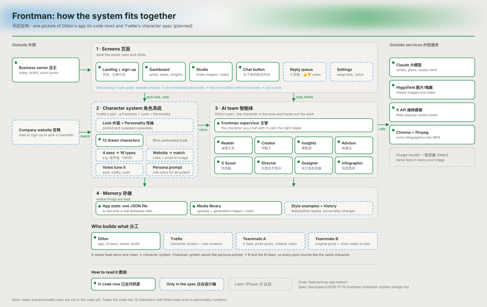
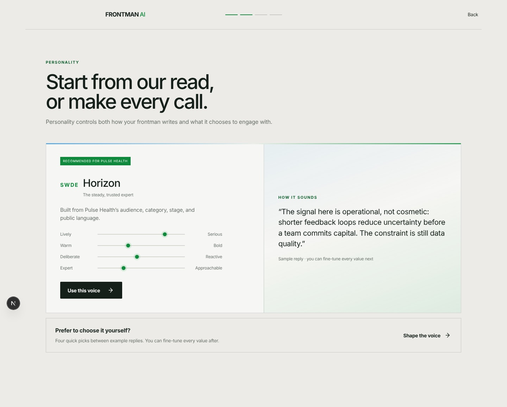
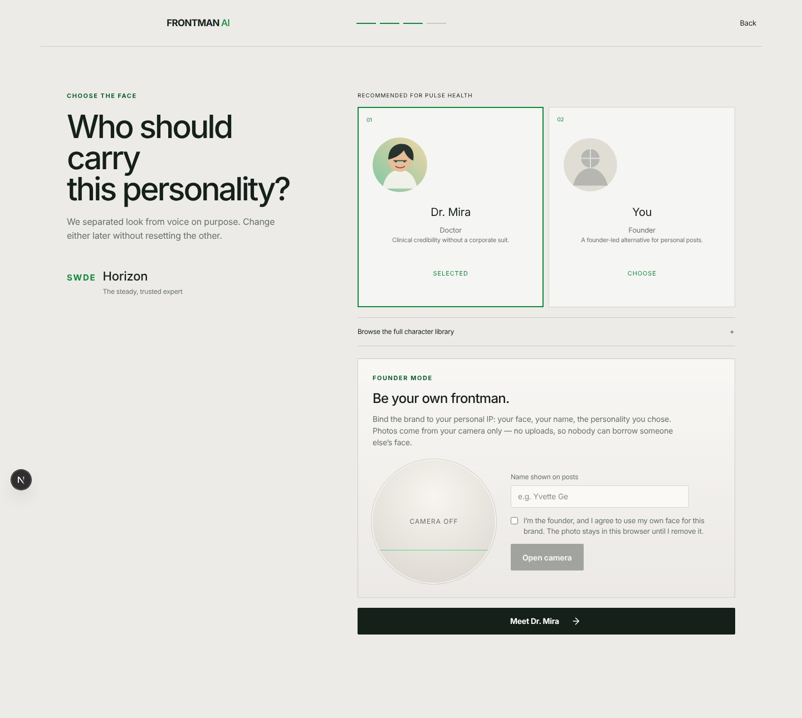
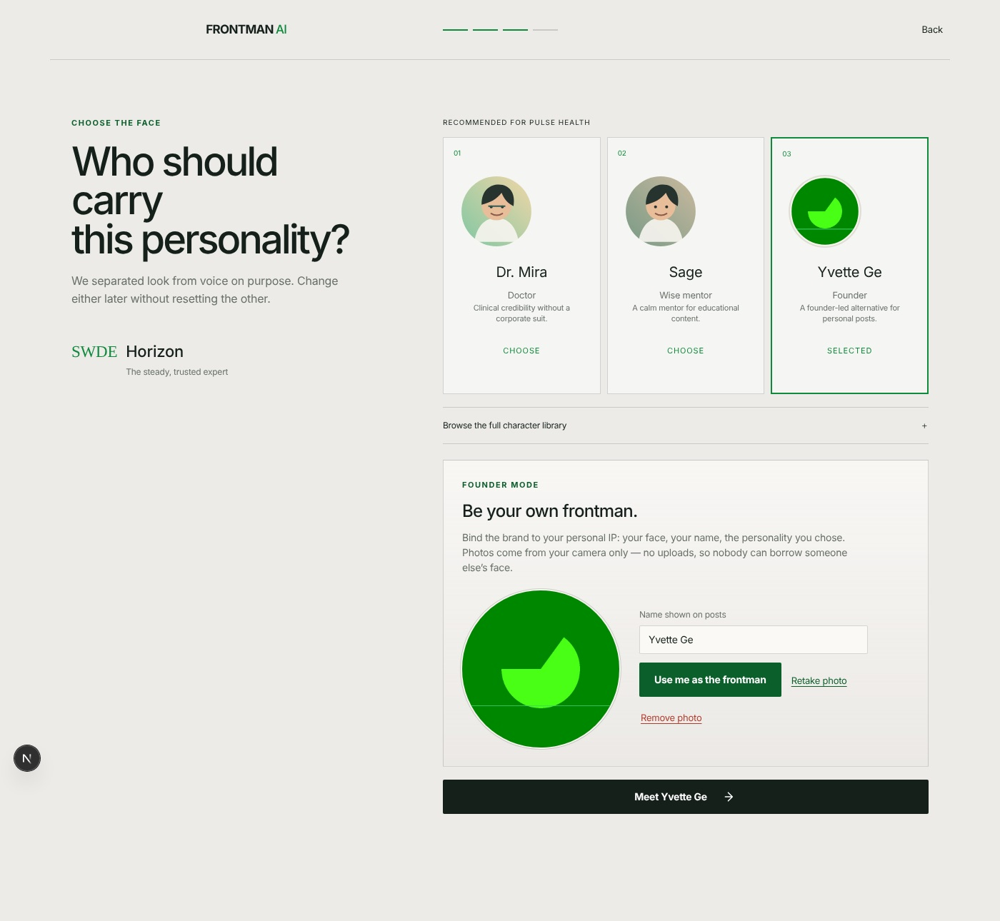

01 · Demo and walkthrough
Live demo opens on sign-up.
02 · How it fits together
A Frontman is a look plus a personality. The character system feeds one persona prompt to a team of AI helpers, so every post sounds like the same character.

03 · The context page: reads, not asks
The context page reads the business first, from its website or a context file the founder's own agent writes, and fills in the profile. The founder only checks it, then gets a personality recommended from that context instead of a blank form.

04 · A face: a character or the founder
Every character comes from one shape language of circles and capsules, with profession shown through props. Founder mode puts the founder's own face and name on the brand instead, captured from the camera only.

